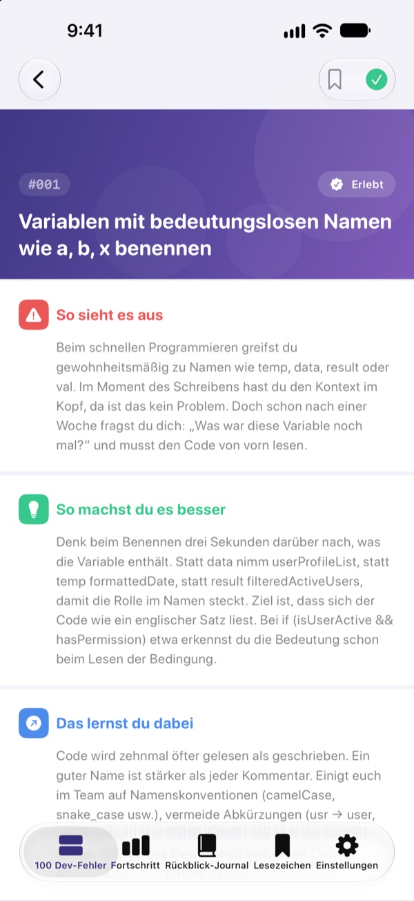
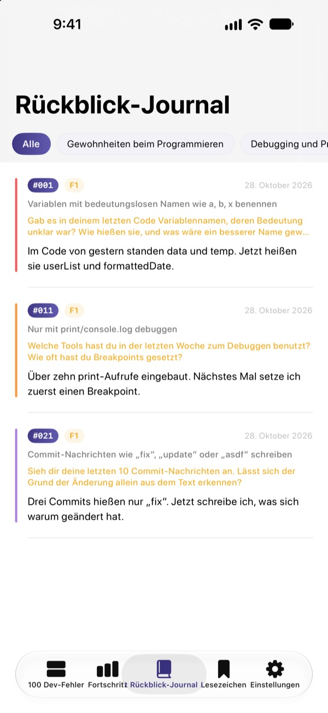
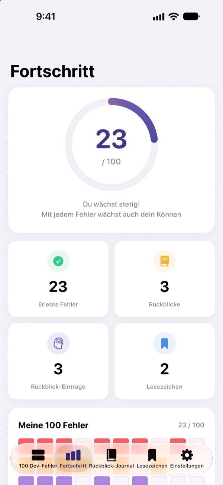

Kenne die Fehler,
bevor sie wehtun
Die 100 Fehler, die Junior-Entwicklern am häufigsten passieren, an einem Ort. Zu jedem liest du, was passiert, was zu tun ist und was du daraus lernst. Danach beantwortest du eine Reflexionsfrage, damit dir derselbe Fehler kein zweites Mal passiert.
Die ersten 30 Fehler sind kostenlos. Für iPhone, iPad und Mac.
Öffne einen Fehler
Das sind die 10 Fehler aus der ersten kostenlosen Kategorie, Wort für Wort wie in der App. Markiere die, die du schon erlebt hast, mit Erlebt.
Schon wieder derselbe Kommentar im Code-Review?
Kryptische Variablennamen, 200-Zeilen-Funktionen, kopierter Code. Jeder Senior hat das hinter sich, aber selbst merkt man es meist erst, wenn man reinläuft. 100 Dev-Fehler zeigt dir diese Fehler vorher und lässt dich über deine eigene Arbeit nachdenken, damit du sie nicht wiederholst.
Was passiert, was tun, was lernen
Jeder Fehler ist in drei Teile gegliedert: was passiert, was zu tun ist und was du daraus lernst.
Zehn Kategorien, von Gewohnheiten beim Programmieren bis Sicherheit und Performance, nur mit Fehlern, die in echten Teams immer wieder vorkommen.

Reflexionsfragen, damit es hängen bleibt
Zu jedem Fehler gibt es 4 Reflexionsfragen, insgesamt 400. Beantworte sie mit deinen eigenen Projekten im Kopf, und aus Gelesenem wird Erfahrung.
Deine Antworten landen nach Kategorien sortiert im Rückblick-Journal, jederzeit zum Nachlesen.

Sieh, wie weit du gekommen bist
Hak die Fehler ab, die du erlebt hast, und dein Fortschritt wächst pro Kategorie und insgesamt. Setz ein Lesezeichen bei allem, was du dir noch mal ansehen willst.
Alles wird per iCloud zwischen iPhone, iPad und Mac synchronisiert.

In drei Schritten loslegen
- 1
Kategorie wählen
Gewohnheiten beim Programmieren, Debugging und Versionsverwaltung sind kostenlos offen.
- 2
Lesen und abhaken
Tippe bei Fehlern, die dir selbst passiert sind, auf Erlebt.
- 3
Reflektieren
Schreib eine Antwort, auch wenn sie kurz ist. Sie landet in deinem Rückblick-Journal.
Die 10 Kategorien
- Gewohnheiten beim Programmieren
- #001–#010 · Kostenlos
- Debugging und Problemlösung
- #011–#020 · Kostenlos
- Versionsverwaltung und Zusammenarbeit
- #021–#030 · Kostenlos
- Design und Architektur
- #031–#040 · PRO
- Tests und Qualität
- #041–#050 · PRO
- Lernen und Wachsen
- #051–#060 · PRO
- Kommunikation und Zusammenarbeit
- #061–#070 · PRO
- Deployment und Betrieb
- #071–#080 · PRO
- Sicherheit und Daten
- #081–#090 · PRO
- Performance und Optimierung
- #091–#100 · PRO
Jede Kategorie hat 10 Fehler, jeder Fehler 4 Reflexionsfragen.
30 kostenlos. Alle 100 mit PRO.
Kostenlos
- Die ersten 3 Kategorien, 30 Fehler
- Die 120 Reflexionsfragen dazu
- Checkliste, Rückblick-Journal, Fortschritt und Lesezeichen
- iCloud-Sync (iPhone, iPad, Mac)
100 Dev-Fehler PRO
- Die übrigen 7 Kategorien, 70 weitere Fehler (#031–#100)
- 280 weitere Reflexionsfragen
- Alle künftigen Inhalts-Updates
Monatlich, jährlich (bis zu 50 % günstiger als monatlich) oder einmalig auf Lebenszeit.
Keine persönlichen Daten, keine Analyse-Tools, keine Werbung.
Häufige Fragen
Was ist kostenlos?
Alle 30 Fehler samt Reflexionsfragen in Gewohnheiten beim Programmieren, Debugging und Problemlösung sowie Versionsverwaltung und Zusammenarbeit. Checkliste, Rückblick-Journal, Fortschritt, Lesezeichen und iCloud-Sync sind ebenfalls kostenlos.
Wie nutze ich PRO auf einem anderen Gerät?
Melde dich mit derselben Apple-ID an und tippe im Abo-Bildschirm auf Käufe wiederherstellen.
Wie kündige ich das Abo?
Jederzeit unter Einstellungen › Apple-ID › Abonnements. Das Abo verlängert sich automatisch, wenn du nicht spätestens 24 Stunden vor Ende des aktuellen Zeitraums kündigst. Lebenszeit ist eine einmalige Zahlung.
Meine Daten werden nicht zwischen Geräten synchronisiert.
Prüfe, ob alle Geräte mit derselben Apple-ID bei iCloud angemeldet sind und iCloud für diese App in den Einstellungen aktiviert ist. Für den Sync brauchst du außerdem eine Internetverbindung.
Wie lösche ich alles?
Tippe in den Einstellungen der App auf Alle Daten zurücksetzen. Häkchen, Antworten und Lesezeichen werden gelöscht, das lässt sich nicht rückgängig machen.
Auf welchen Geräten läuft die App?
Auf iPhone, iPad und Mac. PRO ist auf allen Geräten mit derselben Apple-ID freigeschaltet.
Werden meine Daten irgendwohin gesendet?
Nein. Häkchen und Antworten liegen nur auf deinen Geräten und in deiner eigenen iCloud. Die App sammelt keine persönlichen Daten und hat weder Analyse-Tools noch Werbung.
Fragen oder Vorschläge? Schreib an leeo@kakao.com.